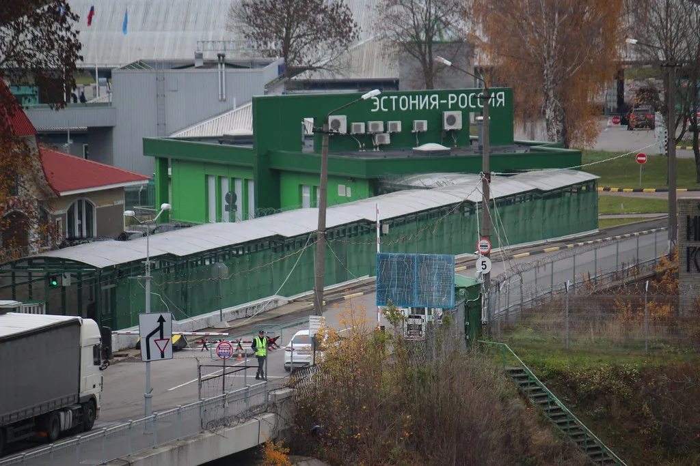
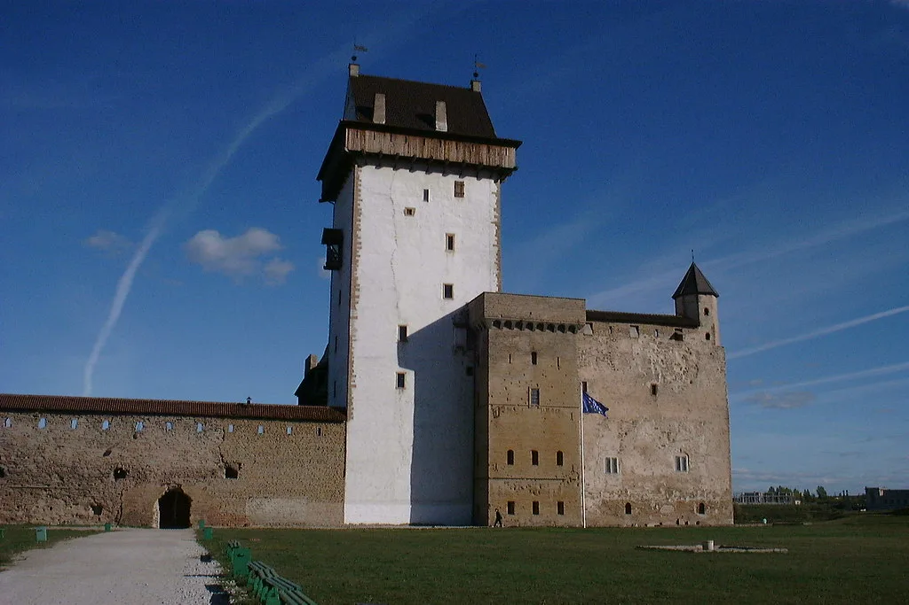

발트해 연안의 나토(NATO) 회원국 에스토니아가 러시아와 맞닿은 육로 국경을 닫기로 하면서 양국 관계가 급격히 얼어붙고 있다. 에스토니아 정부는 다음 달 1일부터 러시아로 이어지는 도로 검문소 5곳을 모두 폐쇄하고, 이 조치를 최소 6개월간 유지하겠다고 밝혔다. 러시아는 이를 명백한 적대 행위로 규정하며 강하게 반발했고, 일부 외신은 모스크바가 무력 충돌 가능성까지 언급하며 경고 수위를 높였다고 전했다.
국경 폐쇄의 직접적인 계기는 자국 방산업체를 겨냥한 방화 시도였다. 에스토니아 당국은 드론 제조업체 스레오드 시스템스(Threod Systems)를 노린 방화 시도를 적발해 막았으며, 그 배후로 러시아군 정보기관인 정보총국(GRU)을 지목했다. 러시아는 이 사건과의 관련성을 부인하고 있다. 크리스텐 미칼 에스토니아 총리는 국경을 닫는 것이 자국민이 처한 위협을 줄이는 길이라고 설명했지만, 언제 다시 열지는 밝히지 않았다.

러시아의 대응은 신속하고 날카로웠다. 러시아 외무부는 모스크바 주재 에스토니아 대리대사를 불러 공식 항의했고, 에스토니아가 우크라이나에 자국 영공을 내줘 러시아를 향한 드론 공격에 이용되도록 했다고 주장했다. 앞서 러시아 외무부는 국경 폐쇄 계획이 실행되면 이를 또 하나의 노골적인 러시아 혐오 행태로 간주하겠다고 경고한 바 있다. 외신들은 러시아 측이 이러한 적대 행위가 전면적 충돌로 번질 수 있다는 취지의 경고까지 내놨다고 보도했다.
에스토니아는 러시아의 주장을 정면으로 반박했다. 에스토니아 외무부는 자국 영토가 다른 나라의 군사작전에 이용되는 일은 결코 없을 것이라고 밝혔다. 마르구스 차크나 외무장관은 미국 정치 전문매체 기고문에서 이번 국경 폐쇄가 갈수록 거세지는 러시아의 적대적 공작에 대한 대응이라고 강조했다. 방화 시도와 같은 이른바 '하이브리드 공격'이 반복되는 상황에서 국경 통제를 강화하는 것은 불가피한 방어 조치라는 논리다.
이번 갈등은 우크라이나 전쟁 이후 발트 3국과 러시아 사이에서 이어져 온 긴장의 연장선에 있다. 발트 국가들은 그동안 러시아발 사이버 공격, 허위정보 유포, 영공 침범 등을 잇따라 문제 삼아 왔고, 러시아는 이들 국가가 우크라이나를 돕고 있다며 경고를 거듭해 왔다. 에스토니아가 나토 회원국이라는 점에서, 양국 간 충돌 위험이 커질 경우 사안은 곧바로 러시아와 나토 전체의 문제로 확대될 수 있다.

에스토니아 국내에서도 우려의 목소리가 없지 않다. 특히 러시아와 맞닿은 동부 국경 지역에는 러시아어를 쓰는 주민이 많고, 가족을 만나거나 생활 필요로 국경을 정기적으로 오가는 사람도 적지 않다. 이들 지역에서는 국경 폐쇄가 주민들의 일상과 지역 경제에 큰 부담을 줄 것이라는 비판이 나온다. 안보를 앞세운 조치가 국내 소수 공동체와의 갈등을 키울 수 있다는 점은 에스토니아 정부가 함께 풀어야 할 숙제다.
국경 폐쇄가 실제로 시행되는 다음 달 1일을 앞두고, 러시아가 말로 끝나는 경고에 그칠지 아니면 실질적인 보복 조치에 나설지가 관심사다. 유럽 각국과 나토도 사태 추이를 예의주시하고 있다. 양측이 각자의 주장을 굽히지 않는 가운데 우발적인 사건 하나가 긴장을 급격히 고조시킬 수 있다는 우려도 나오고 있어, 외교적 소통 채널을 유지하는 것이 무엇보다 중요하다는 지적이 나온다.